library(tidyverse)Visualise: ggplot

Einleitung
Wir wissen nun, wie wir Daten in R importieren, bereinigen und transformieren können. Vor allem mithilfe von dplyr können wir schnell & effizient eine bessere Idee über unsere Daten bekommen. Doch tabellarische Daten und einzelne Werte sind nur eine Seite der Data-Science Medaille: Besonders durch Visualisierung bekommen wir eine Idee über die Verteilung von Daten und können versteckte Signale in den Daten enthüllen. Dazu eignet sich ggplot2 hervorragend. Ebenso wie dplyr gehört es zum tidyverse und zu den beliebtesten R-Packages.
ggplot2 sollte sich automatisch auch durch die Aktivierung von tidyverse aktivieren:
Base R
Base-R bietet natürlich auch Funktionen zur Visualisierung von Daten. Jedoch ist es auch hier hilfreich, gleich den “state-of-the-art” zu lernen und sich ggplot2 anzueignen, da wir somit viel mehr Anpassungsmöglichkeiten und eine vereinfachte Grammatik haben.
Trotzdem wollen wir an dieser Stelle kurz zeigen, dass auch Base-R schnell visualisieren kann. Ein Beispiel dafür ist die hist(x) Funktion, mit der ihr schnell ein Histogramm erstellen könnt, und dessen Syntax wie folgt ist:
hist(dataframe$variable)Testen wir das Ganze an unserem iris Datensatz. Falls dieser nicht mehr im Environment ist, lesen wir ihn kurzerhand neu ein:
iris <- read_csv("assets/datasets/iris/iris.csv")Nun erstellen wir ein Histogramm für die Variable sepal_length:
hist(iris$sepal_length)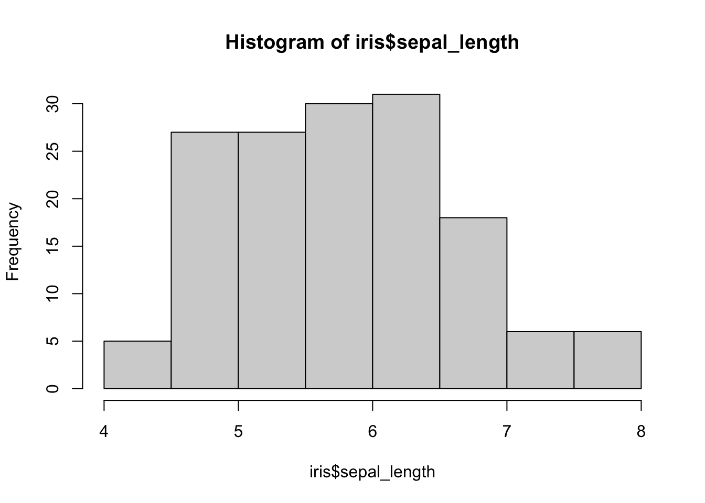
Voila! Eine Zeile Code, und wir können uns direkt die Verteilung der Daten in Form eines Histogramms anschauen. Aus den oben genannten Gründen wollen wir an dieser Stelle aber den Fokus vor allem auf ggplot2 setzen.
Hinweis
ggplot2 ist der offzielle Name und auch das richtige Package, der Einfachheit halber werden wir aber von ggplot sprechen.
ggplot
Gehen wir nun also genauer auf die Syntax von ggplot ein, welche sich etwas von der von der Visualisierung in Base-R unterscheidet.
Syntax
Ebenso wie der Pipe-Operator %>% bei dplyr eine besondere Rolle spielt, tut es das + bei ggplot. Aber dazu gleich mehr. Im Folgenden sehen wir den grundsätzlichen Aufbau eines Befehls bzw. einer Befehlskette, die ein Plot erzeugt:
ggplot(data=object)+
geom_function(aes(x=variable),parameters="xyz")+
additional_functions(parameters="additionals")Das sieht auf den ersten Blick erstmal komplizierter aus, als es ist. Aber wir werden den Code Schritt für Schritt aufschlüsseln:
Syntax
Plus Operator +
Wie bereits erwähnt, spielt der + Operator eine wichtige Rolle bei ggplot. Durch + können wir Befehle miteinander verketten. Wichtig zu verstehen ist, dass - ähnlich wie bei dplyr - das Verketten von Befehlen dem “Stapeln” verschiedener Visualisierungen bzw. Eigenschaften entspricht, und jeder einzelne Schritt etwas zum finalen Plot beiträgt. Wie genau das abläuft, werden wir gleich am Beispiel des iris Datensatzes sehen.
Geometrische Funktionen geom_function(x)
geom_function(x) (geom_ für geometrical) ist hier nur ein Platzhalter für eine Vielzahl verschiedener Funktionen, die wir in Abhängigkeit davon benutzen, was wir visualisieren wollen. So gibt es etwa geom_bar(x) für Bar-Charts, geom_point(x) für Punktwolken oder geom_line(x) für Liniendiagramme. Weiter unten werden wir einige davon beispielhaft vorstellen.
Aesthetics aes(x)
aes(x) steht für aesthetics und sorgt dafür, Datenpunkte in visuelle Darstellung zu übertragen bzw. zu mappen. Das klingt erstmal abstrakter, als es eigentlich ist. Meistens werden hier die Variablen für die entsprechenden Achsen angebenen (bspw. x=sepal_width) oder aber auch für die Farben bzw. Füllungen von Balken/Punkten (bspw. color=species). Warum das wichtig ist und was der Unterschied zu Parametern außerhalb der aes(x) Funktion ist, werden wir gleich sehen.
Parameter parameters
Wie bei allen Funktionen können wir hier auch diverse Dinge als Parameter übergeben. Beispiele sind etwa color oder size.
Zusätzliche Funktionen additional_functions(x)
Auch additional_functions(x) sind hier nur ein Platzhalter für eine Vielzahl weiterer Funktionen, die wir mit in unsere ggplot Kette nehmen können, bspw. theme_classic(x) oder xlab(x). Mithilfe dieser können wir das Plot im Nachhinein weiter anpassen.
Beispiel
Soweit die Syntax. Am besten lässt sich ggplot aber anhand eines Beispiels verstehen. Machen wir also mit unserem iris Datensatz weiter. Wir wollen die Verteilung der Blattgrößen besser verstehen, und entscheiden uns dazu, ein Plot zu erstellen. Wie bereits beschrieben, hilft der + Operator dabei, verschiedene Funktionen für das Plot miteinander zu verketten. Fangen wir also mit der ersten Ebene an:
ggplot(data = iris)
Wir sehen, mit dem Befehl ggplot(x) haben wir ein leeres Plot erzeugt. Fügen wir nun also ein Diagramm unserer Wahl hinzu. Wir fangen mit geom_bar(x) an.
ggplot(data = iris)+
geom_bar()Wie wir sehen können, wirft R den Fehler :
`stat_count()` requires an x or y aesthetic.Das liegt daran, dass wir die aes(x) Funktion vergessen haben. Ohne das mapping von Datenpunkten weiß die geom_bar(x) Funktion nicht, wo welcher Datenpunkt hinsoll. Versuchen wir es also nochmal, und spezifizieren wir sepal_width als x-Variable:
ggplot(data=iris)+
geom_bar(aes(x=sepal_width))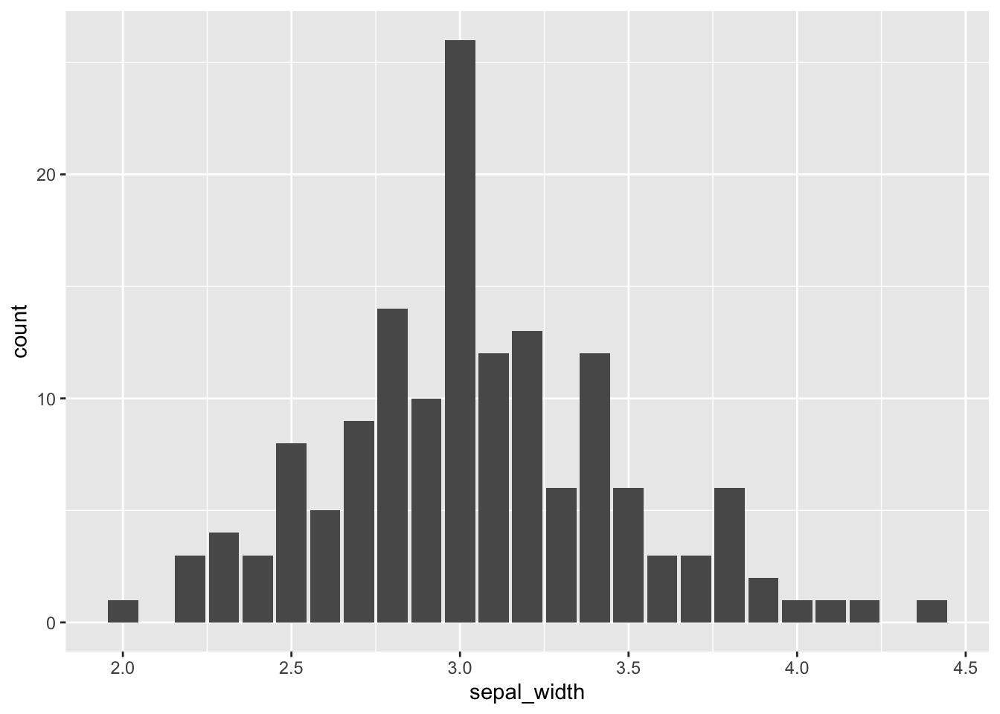
Wie wir sehen, haben wir nun die Variable sepal_width erfolgreich visualisiert und entdecken eine Normalverteilung.
Da es sich bei geom_bar() um ein Histogramm handelt, müssen wir lediglich die x-Variable übergeben, da für die y-Variable automatisch gezählt wird.
Angenommen, wir möchten die Farbe verändern, sodass die Balken die Farbe hellrot haben. Dann müssen wir dies als fill Parameter der geom_bar() Funktion übergeben:
ggplot(data=iris)+
geom_bar(aes(x=sepal_width), fill="lightblue")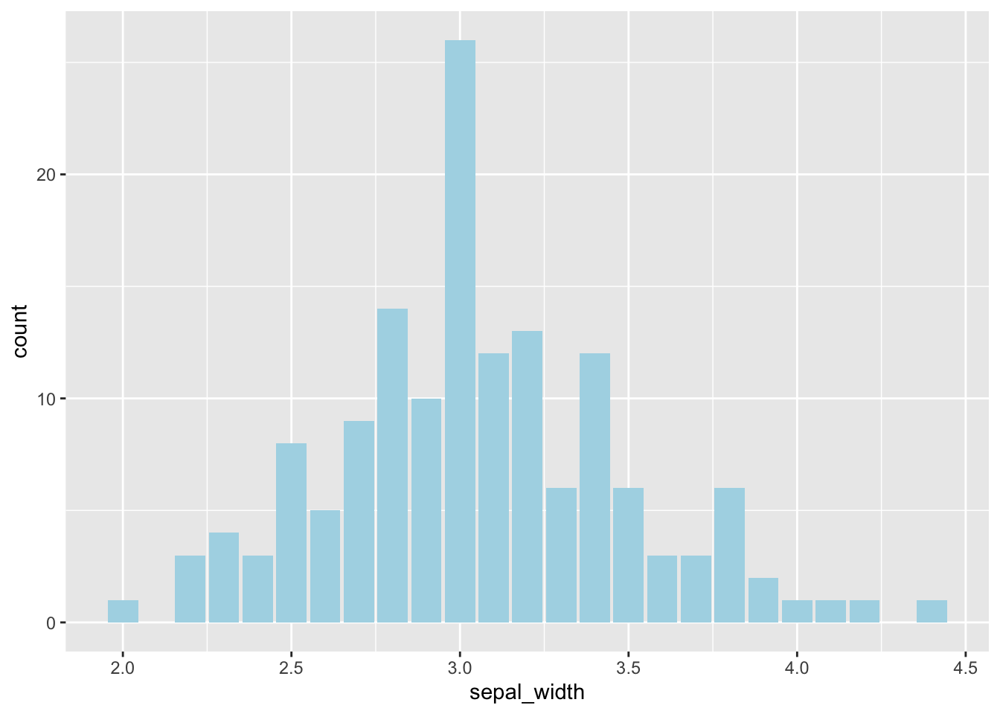
Nun sind alle Balken rot. Was ist aber, wenn wir wollen, dass die Balken in Abhängigkeit einer Variable verschiedenfarbig sind? Dann müssen wir die fill Variable in der aes(x) Funktion übergeben:
ggplot(data=iris)+
geom_bar(aes(x=sepal_width, fill=species))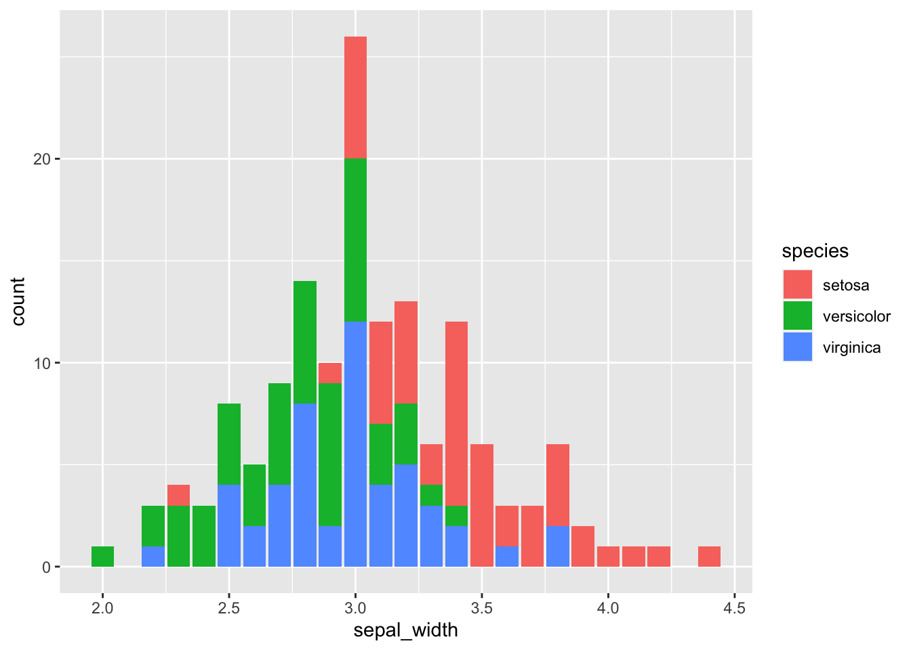
Perfekt! Auf einen Blick können wir sehen, dass Pflanzen der Spezies setosa eher größere sepal_width haben. Bis jetzt haben wir allerdings nur einen Befehl mithilfe des + Operators verknüpft. Angenommen, uns stören die Achsenbeschriftungen und wir wollen einen Titel haben. Auch das ist einfach möglich über eine Verkettung mit +:
ggplot(data=iris)+
geom_bar(aes(x=sepal_width, fill=species))+
ylab("Prevalence")+
xlab("Width of Sepal")+
ggtitle("Sepal width of Iris Flower for each species")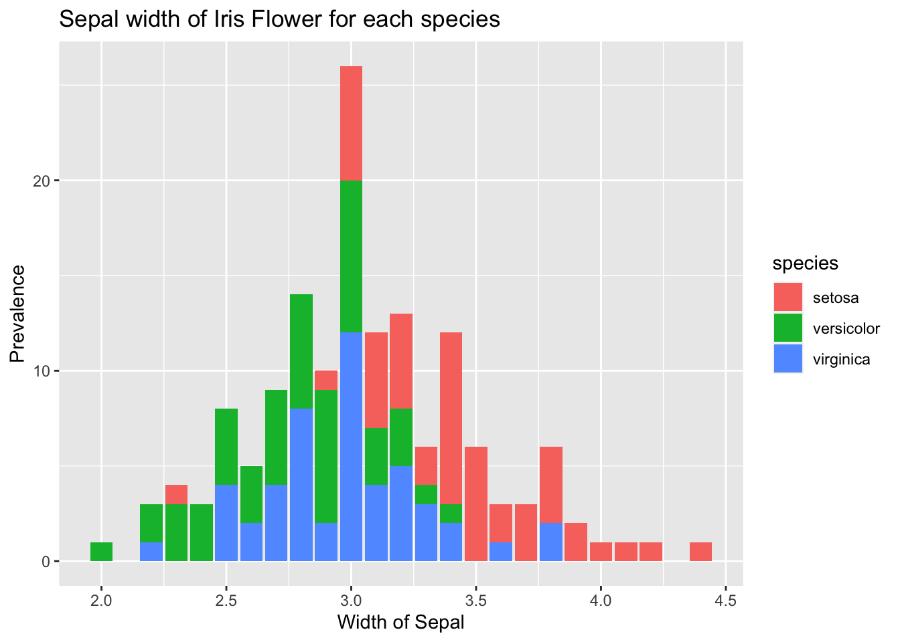
Die Farben sehen noch etwas langweilig aus. Ein kurzer Blick auf coolors.co inspiriert uns und wir wollen nun die folgende Farbpalette als Grundlage für unser Plot nehmen:

Aufgabe
Kopiert die Farbcodes von der Website und erzeugt einen Vektor metro_colors
metro_colors <- c("#fccc0a","#ff6319","#ee352e","#b933ad","#00933c","#0039a6","#996633","#000000") Wenn wir nun wollen, dass unser Plot diese Farben hat, können wir eine der scale_xxx_manual(x) Funktionen nehmen. In unserem Fall haben wir oben die Farben für den fill der Bars definiert, daher brauchen wir auch die scale_fill_manual(x) Funktion. Die Syntax ist folgende:
ggplot(data=object)+
geom_function(aes(x=variable),parameters="xyz")+
scale_fill_manual(values = color_vector)color_vector bezieht sich hier auf einen Vektor mit Farbcodes als character eingespeichert. Wir könnten die Farbcodes aber auch direkt als character Vektor übergeben. Neben scale_fill_manual(x) gibt es noch viele weitere Funktionen, wie bspw. scale_color_manual(x) für den colour des Plots.
Aufgabe
Färbt eure Bars entsprechend der Farben im metro_colors Vektor
ggplot(data=iris)+
geom_bar(aes(x=sepal_width, fill=species))+
ylab("Prevalence")+
xlab("Width of Sepal")+
ggtitle("Sepal width of Iris Flower for each species")+
scale_fill_manual(values = metro_colors)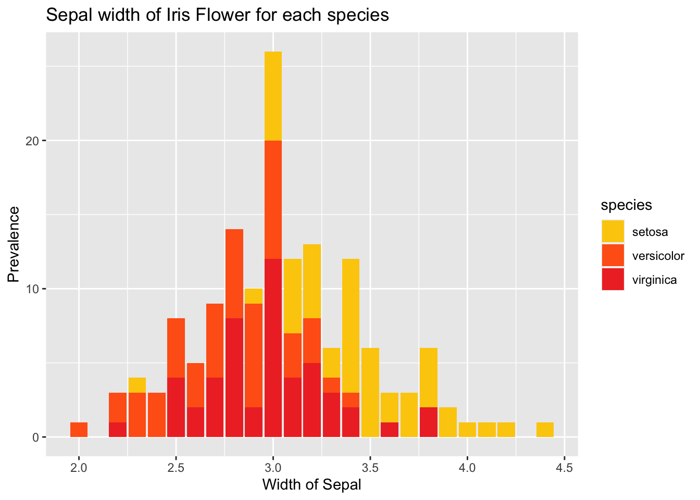
Super! Wir hätten nun gerne noch einen schwarzen Rand um die Balken. Dabei hilft uns der Parameter colour in geom_bar():
ggplot(data=iris)+
geom_bar(aes(x=sepal_width, fill=species), colour="#2b2b2b")+
ylab("Prevalence")+
xlab("Width of Sepal")+
ggtitle("Sepal width of Iris Flower for each species")+
scale_fill_manual(values = metro_colors)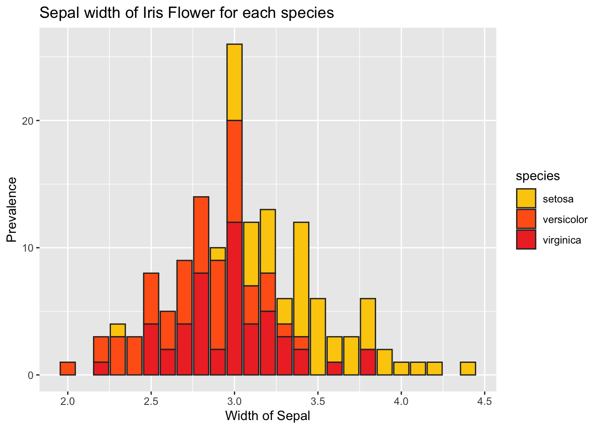
Frage
Warum haben wir hier colour außerhalb des aes(x) Calls definiert?
Da wir hier den colour immer dunkelgrau haben wollen (anstatt in Abhängigkeit einer Variable) definieren wir es außerhalb des aes(x) Calls. Jetzt stört uns nur noch der Hintergrund, und dann sind wir zufrieden. ggplot bietet verschiedene themes, die wir einfach über den + Operator verwenden können. Wir entscheiden uns für theme_minimal():
ggplot(data=iris)+
geom_bar(aes(x=sepal_width, fill=species), color="#2b2b2b")+
ylab("Prevalence")+
xlab("Width of Sepal")+
ggtitle("Sepal width of Iris Flower for each species")+
scale_fill_manual(values = metro_colors)+
theme_minimal()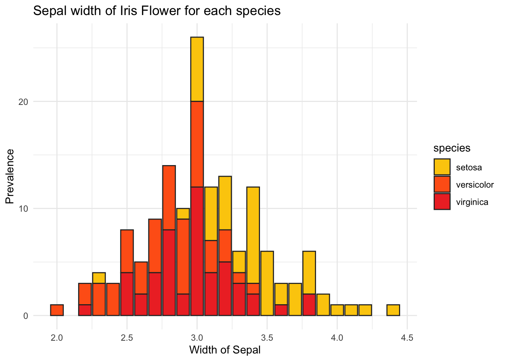
Super! Ein publizierfähiges Plot in 7 Zeilen wiederverwendbarem Code. An diesem Beispiel haben wir gesehen, wie einfach das mit ggplot und das verketten von Befehlen geht. Im Folgenden wollen wir euch noch eine Auswahl an Visualisierungsfunktionen, sogennante geom_() vorstellen, die wir häufig benötigen.
Visualisierungsfunktionen
Wie bereits beschrieben, sind geom_ die Visualisierungsfunktionen. Jenachdem, wie unsere Daten strukturiert sind, bietet sich einige davon mehr, andere weniger an. Eine sinnvolle Einteilung geht von den Achsen bzw. zu visualisierenden Variablen aus. Dabei sollten wir uns immer die Frage stellen:
Wieviele Variablen möchte ich visualieren?
In einem 2-dimensionalen Koordinatensystem können wir natürlich erstmal nur zwei Variablen darstellen. Allerdings erlaubt uns ggplot auch die Visualisierung von mehr Variablen. So können wir etwa über fill bzw. colour weitere Variablen mit in unser Plot einbringen. Eine weitere Frage, die wir uns in diese Richtung stellen sollten, ist:
Was für einen Datentyp haben die zu visualisierenden Variablen?
Je nachdem, wie die wir diese Fragen beantworten, bieten sich dann verschiedene Funktionen an. Im obigen Beispiel haben wir eine Variable (sepal_width), welche intervallskaliert ist. Dafür bietet sich entsprechend ein Histogramm bzw. geom_bar(x)an.
Frage
Was für Visualisierungen kommen bei zwei intervallskalierten Variablen in Frage?
Richtig, hier bietet sich vor allem ein Scatterplot an, in ggplot heißt das geom_point(x). Immer wenn es darum geht, eine Übersicht über die Funktionen eines Packages zu bekommen, können die Cheatsheets hilfreich sein. Besonders zur Inspiration und zum Brainstormen zu einer Visualisierung bietet sich hierbei das Cheatsheet zu ggplot an:
Dort sind die Vielzahl weiterer Visualisierungen zu finden. Nebem geom_bar(x) wollen wir in dieser Session noch zwei weitere, häufig benötigte Funktionen sowie deren Kombination zeigen: geom_point(x) und geom_smooth(x).
Scatterplot - geom_point(x)
Angenommen, wir haben zwei intervallskalierte Variablen, die wir visualisieren wollen. Dann bietet sich geom_point(x) an. In unserem Beispiel des iris Datensatzes ist das der Fall - hier sind die Variablen sepal_width etc. intervallskaliert. Wollen wir uns also anschauen, wie das Ganze in einem Scatterplot aussieht, so können wir die geom_point(x) Funktion verwenden.
Aufgabe
Visualisiert sepal_width und sepal_length als Scatterplot.
Versuchen wir also mal, die Verteilung von sepal_width und sepal_length zu visualisieren. Wir übernehmen die Anpassungen (Achsenbeschriftung etc.) von oben.
ggplot(data=iris)+
geom_point(aes(x=sepal_width,y=sepal_length))+
ylab("Length of Sepal")+
xlab("Width of Sepal")+
ggtitle("Sepal width and length of Iris Flower")+
theme_minimal()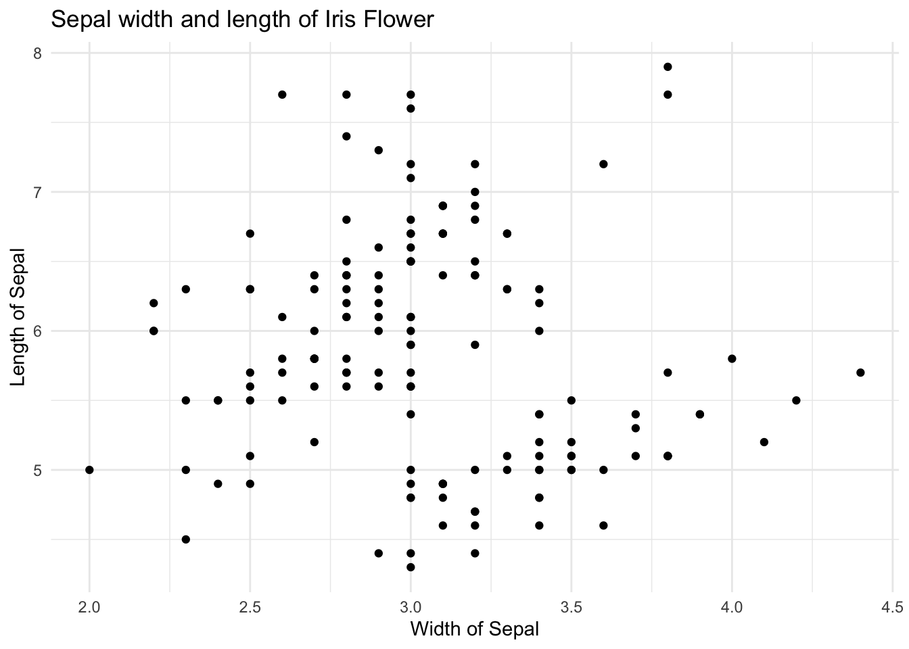
Super! Nun wäre es praktisch, wenn wir auch noch die Variable species einbringen könnten. Dies können wir durch colour in aes() tun.
Aufgabe
Bringt nun auch die Farbe ein und benutzt dafür die metro_colors Palette
ggplot(data=iris)+
geom_point(aes(x=sepal_width,y=sepal_length,color=species))+
scale_color_manual(values=metro_colors)+
ylab("Length of Sepal")+
xlab("Width of Sepal")+
ggtitle("Sepal width and length of Iris Flower for each species")+
theme_minimal()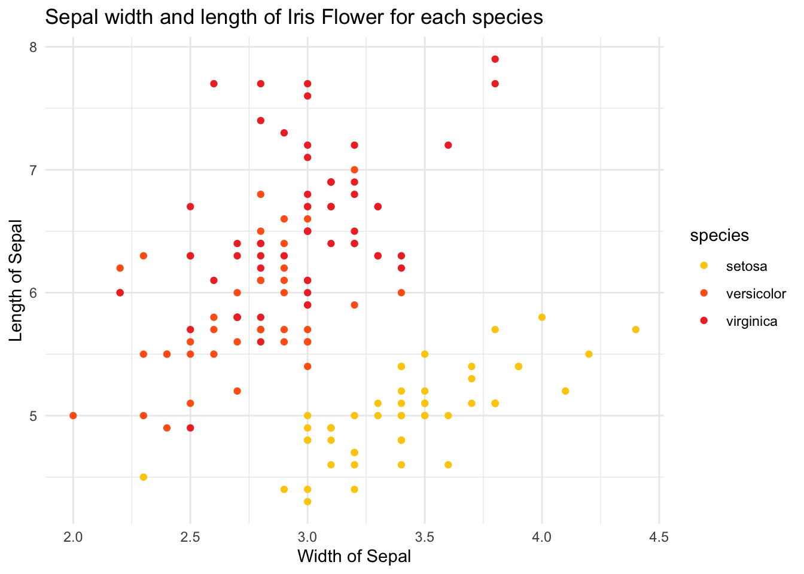
Tipp
Wir verwenden hier colour anstatt fill, da in geom_point(x) die Farbe der Punkte über color anstatt fill bestimmt wird.
Auch hier sehen wir direkt, dass es einen Unterschied zwischen den verschiedenen Spezies zu geben scheint. Visuell können wir auch den (offensichtlichen) Zusammenhang zwischen sepal_width und sepal_length erkennen.
Regressionsgrade - geom_smooth(x)
Da wir Wissenschaftler:innen sind wollen wir sicher gehen und das Ganze noch genauer verstehen, vor allem den Zusammenhang zwischen sepal_width und sepal_length. Dazu können wir uns in den Scatterplot noch eine Regressionsgrade hineinlegen mit Hilfe von geom_smooth(x).
geom_smooth(x) hat eine Besonderheit, und zwar die Methode, mit der die Regressionsgrade kreiert wird. Hierbei gibt es die Möglichkeiten lm, glm gam oder loess. Wir entscheiden uns für lm (linear model), um eine lineare Regressionsgrade zu zeichnen. Wer hier genauer nachlesen möchte, der/die tippt ?geom_smooth in die R-Konsole.
Wir können die Funktion über den + Operator tun - denn in ggplot können wir alle Visualisierungsfunktionen nach Belieben “stapeln”:
ggplot(data=iris)+
geom_point(aes(x=sepal_width,y=sepal_length,color=species))+
scale_color_manual(values=metro_colors)+
ylab("Length of Sepal")+
xlab("Width of Sepal")+
ggtitle("Sepal width and length of Iris Flower for each species")+
theme_minimal()+
geom_smooth(aes(x=sepal_width,y=sepal_length), method="lm") # lm for linear model`geom_smooth()` using formula = 'y ~ x'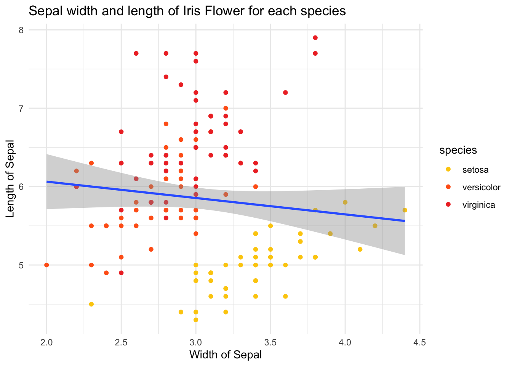
Die Regressionsgrade zeigt einen negativen Zusammenhang, obwohl wir für die einzelnen Spezies einen positiven Zusammenhang sehen. Das liegt daran, dass geom_smooth(x) unseren Faktor species nicht berücksichtigt.
Frage
Woran könnte das liegen?
Da im aes(x) Call von geom_smooth(x) color nicht übergeben wurde, berechnet die Funktion die Regressionsgrade unabhängig von der Variable species. Dies können wir ändern, indem wir in dessen aes(x) Funktion ebenfalls colour übergeben.
ggplot(data=iris)+
geom_point(aes(x=sepal_width,y=sepal_length,color=species))+
scale_color_manual(values=metro_colors)+
ylab("Length of Sepal")+
xlab("Width of Sepal")+
ggtitle("Sepal width and length of Iris Flower for each species")+
theme_minimal()+
geom_smooth(aes(x=sepal_width,y=sepal_length,color=species), method="lm") # lm for linear model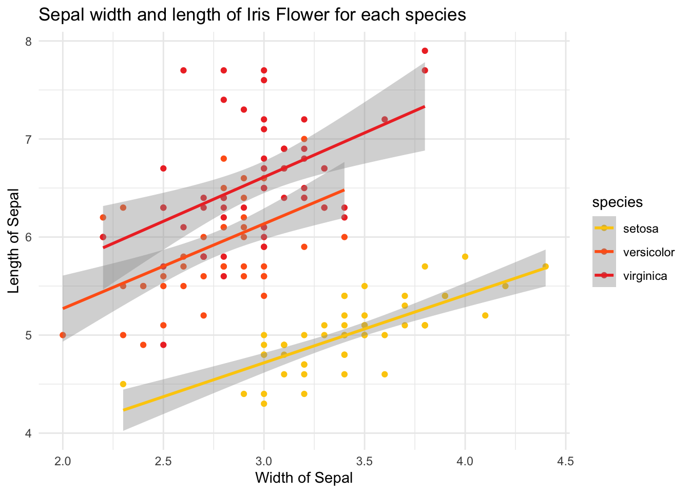
Voila! Wir sehen unsere drei kleinen Regressionsgraden und den erwarteten positiven Zusammenhang.
Tipp
Aufmerksame Programmierer:innen horchen hier bei dem doppelten aes(x) call vielleicht auf: “Redundanz!”, könnte man uns vorwerfen. In der Tat ließe sich der obige Code auch so lösen:
ggplot(data=iris,aes(x=sepal_width,y=sepal_length,color=species))+
geom_point()+
scale_color_manual(values=metro_colors)+
ylab("Length of Sepal")+
xlab("Width of Sepal")+
ggtitle("Sepal width and length of Iris Flower for each species")+
theme_minimal()+
geom_smooth(method="lm") # lm for linear model`geom_smooth()` using formula = 'y ~ x'Wir sehen, dass wir auch bei der ggplot(x) Funktion per aes(x) die relevanten Variablen übergeben können. Sollten die für alle aneinandergeketteten geom_(x) Funktionen die gleichen sein, so spart das Platz und macht den Code effizienter.
Plots speichern
Die Frage nach dem Speichern von Plots ist berechtigt, wenngleich wir dies in der Praxis häufig nicht tun. Der häufigste “Modus Operandi” ist das Erzeugen von Plots direkt in Chunks oder in der Konsole. Aus dem Chunk-Output können diese dann herauskopiert werden (rechte Maustaste).
Noch besser funktioniert es aber, wenn wir den Code für die Erstellung des Plots in die Konsole kopieren, und dort ausführen. Denn dann erscheint das Plot rechts unten unter “Plots”. Hier haben wir viel mehr Möglichkeiten für den Export:

Bspw. PDF oder als Bild. Wir präfererien das Speichern als pdf, da wir so eine Vektorgrafik haben welche wir im Nachhinein noch für das Fine-Tuning mit Adobe Illustrator bearbeiten können.
Fazit & Weitere Resourcen
Wir haben nun gelernt, wie wir mithilfe von ggplot Daten visualisieren können. Natürlich war das nur die Spitze des Eisbergs, und noch viel mehr ist möglich. Einige dieser Dinge werden wir im weiteren Verlauf des Seminars kennenlernen, wenn es um das Arbeiten (und Visualisieren) von konkreten Datensätzen geht.
Neben dieser Website hier (🥳) gibt es natürlich noch viele weitere, tolle Resourcen im Internet. Neben den offziellen Dokumentationen bspw. auf tidyverse oder CRAN wollen wir euch vor allem mit Blick auf dplyr und ggplot noch einige ans Herz legen:
sthda.com: Be Awesome in ggplot2: A Practical Guide to be Highly Effective - R software and data visualization
r-graph-gallery.com: A collection of charts made with the R programming language
r-bloggers.com: DPLYR: A beginner’s guide
Nächste Session
Das war’s mit dieser Session. In der nächsten Session geht es um Modelling - wie können wir unsere Erkenntnisse denn nun statistisch absichern?